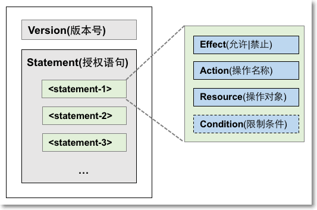

授权策略（Authorization Policy）基本元素
阿里云 > 访问控制 RAM > 授权策略管理
RAM 中使用授权策略（Policy）来描述授权的具体内容，授权内容包含以下基本因素：效力（Effect）、资源（Resource）、对资源所授予的操作权限（Action）以及限制条件（Condition）。
效力（Effect）
授权效力包括两种：允许（Allow）和拒绝（Deny）。
资源（Resource）
资源是指被授权的具体对象。
比如，访问策略 “允许张三对资源 SampleBucket 执行 GetBucket 操作” 中的资源是“SampleBucket”。
操作权限（Action）
操作方法是指对具体资源的操作。
比如，访问策略 “允许张三对资源 SampleBucket 执行 GetBucket 操作” 中的操作是“GetBucket”。
限制条件（Condition）
限制条件是指授权生效的限制条件。
比如，访问策略 “允许张三在 2011 年 12 月 31 日之前对资源 SampleBucket 执行 GetBucket 操作” 中的限制条件是“在 2011 年 12 月 31 日之前”。
授权策略样例
下面是一个权限策略实例，它描述的含义：允许对 OSS 的 samplebucket 进行只读操作，条件是请求者的 IP 来源为 42.160.1.0。
{
"Version": "1",
"Statement":
[{
"Effect": "Allow",
"Action": ["oss:List*", "oss:Get*"],
"Resource": ["acs:oss:*:*:samplebucket", "acs:oss:*:*:samplebucket/*"],
"Condition":
{
"IpAddress":
{
"acs:SourceIp": "42.160.1.0"
}
}
}]
}
Policy 结构
授权策略（Policy）结构包括 Policy 版本号及授权语句（Statement）列表。每个授权语句又包括以下元素：Effect（授权类型）、Action（操作名称列表）、Resource（操作对象列表）以及 Condition（条件限制），其中 Condition 是可选项。
Policy 结构简述如下：
图 1. Policy 结构

格式检查（JSON）
RAM 仅支持 JSON 格式的描述。当创建或更新 Policy 时，RAM 会首先检查 JSON 格式的正确性。
- 关于 JSON 的语法标准请参考 RFC 7159。
- 用户也可以使用一些在线的 JSON 格式验证器和编辑器来校验 JSON 文本的有效性。
Policy 语法
了解 Policy 中用到的字符及规则，以及 Policy 语法描述。
字符及规则
Policy 中所包含的 JSON 字符有：{ } [ ] " , :；描述语法使用的特殊字符有：= < > ( ) |。
字符使用说明如下：
- 当一个元素允许多值时，使用逗号和省略号来表达，比如：
[ <action_string>, <action_string>, ...]。在所有支持多值的语法中，使用单值也是有效的。而且两种表达方式是等效的："Action": [<action_string>]和"Action": <action_string> - 带有问号的元素表示这是一个可选元素，比如：
<condition_block?> - 多值之间用竖线 （|）隔开，表示取值只能选取这些值中的某一个。比如：
("Allow" | "Deny") - 使用双引号引起了的元素，表示它是文本串。比如：
<version_block> = "Version" : ("1")
语法描述及说明
Policy 语法描述如下：
policy = {
<version_block>,
<statement_block>
}
<version_block> = "Version" : ("1")
<statement_block> = "Statement" : [ <statement>, <statement>, ... ]
<statement> = {
<effect_block>,
<action_block>,
<resource_block>,
<condition_block?>
}
<effect_block> = "Effect" : ("Allow" | "Deny")
<action_block> = ("Action" | "NotAction") :
("*" | [<action_string>, <action_string>, ...])
<resource_block> = ("Resource" | "NotResource") :
("*" | [<resource_string>, <resource_string>, ...])
<condition_block> = "Condition" : <condition_map>
<condition_map> = {
<condition_type_string> : {
<condition_key_string> : <condition_value_list>,
<condition_key_string> : <condition_value_list>,
...
},
<condition_type_string> : {
<condition_key_string> : <condition_value_list>,
<condition_key_string> : <condition_value_list>,
...
}, ...
}
<condition_value_list> = [<condition_value>, <condition_value>, ...]
<condition_value> = ("String" | "Number" | "Boolean")
语法说明如下：
- 版本：当前支持的 Policy 版本为 1。
- 授权语句：一个 Policy 可以有多条授权语句。
- 每条授权语句要么是 Deny，要么是 Allow。一条授权语句中，Action 是一个支持多个操作的列表，Resource 也是一个支持多个对象的列表。
- 每条授权语句都支持独立的限制条件（Condition）。一个条件块可以支持多种条件操作类型，以及对这多种条件的逻辑组合。
- Deny 优先： 一个用户可以被授予多个 Policy，当这些 Policy 存在多条授权语句既包含有 Allow 又包含有 Deny 时，遵循 Deny 优先（只认 Deny 不认 Allow）原则。
元素取值：
- 当取值为数字（Number）或布尔值（Boolean）时，与字符串类似，需要用双引号引起。
当元素取值为字符串值（String）时，支持（*）和（？）模糊匹配。
- (*) 代表 0 个或多个任意的英文字母。
- (?) 代表 1 个任意的英文字母。
比如，
ecs:Describe*可以表示 ecs 的所有以 Describe 开头的 API 操作名称。
Policy 元素使用
了解 Policy 语法中各元素的使用规则。
Effect（授权类型）
Effect 取值 为 Allow 或 Deny。比如，"Effect": "Allow"
Action（操作名称列表）
Action 支持多值，取值为云服务所定义的 API 操作名称，其格式定义如下：
<service-name>:<action-name>
格式说明：
- service-name: 阿里云产品名称，如 ecs, rds, slb, oss, ots 等。
- action-name: service 相关的 api 操作接口名称。
描述样例：
"Action": ["oss:ListBuckets", "ecs:Describe*", "rds:Describe*"]
Resource（操作对象列表）
Resource 通常指操作对象，比如 ECS 虚拟机实例，OSS 存储对象。我们使用如下格式来命名阿里云服务的资源命名。
acs:<service-name>:<region>:<account-id>:<relative-id>
格式说明：
-
acs: Aliyun Cloud Service 的首字母缩写，表示阿里云的公有云平台。 -
service-name: 阿里云提供的 Open Service 的名字，如 ecs, oss, ots 等。 -
region: 地区信息。如果不支持该项，可以使用通配符 “*” 号来代替。 -
account-id: 账号 ID，比如1234567890123456，也可以用 “*” 代替。 -
relative-id: 与 service 相关的资源描述部分，其语义由具体 service 指定。这部分的格式描述支持类似于一个文件路径的树状结构。以 oss 为例，relative-id = “mybucket/dir1/object1.jpg”表示一个 OSS 对象。
描述样例：
"Resource": ["acs:ecs:*:*:instance/inst-001", "acs:ecs:*:*:instance/inst-002", "acs:oss:*:*:mybucket", "acs:oss:*:*:mybucket/*"]
Condition（条件限制）
条件块（Condition Block）由一个或多个条件子句构成。一个条件子句由条件操作类型、条件关键字和条件值组成。条件操作类型和条件关键字在下文中会有详细描述。
条件块判断逻辑
是否满足条件的判断原则如下图所示：
图 2. 是否满足条件的判断原则

具体规则如下：
- 一个条件关键字可以指定一个或多个值，在条件检查时，如果条件关键字的值与指定值中的某一个相等，即可判定条件满足。
- 同一种条件操作类型的条件子句下的多个条件关键字同时满足的情况下，才能判定该条件子句满足。
- 条件块下的所有条件子句同时满足的情况下，才能判定该条件块满足。
条件操作类型
支持如下条件操作类型：字符串类型（String）、数字类型（Numeric）、日期类型（Data and time）、布尔类型（Boolean）和 IP 地址类型（IP address）。
每种条件操作类型分别支持如下的方法：
| String | Numeric | Date and time | Boolean | IP address |
|---|---|---|---|---|
| StringEquals | NumericEquals | DateEquals | Bool | IpAddress |
| StringNotEquals | NumericNotEquals | DateNotEquals | - | NotIpAddress |
| StringEqualsIgnoreCase | NumericLessThan | DateLessThan | - | - |
| StringNotEqualsIgnoreCase | NumericLessThanEquals | DateLessThanEquals | - | - |
| StringLike | NumericGreaterThan | DateGreaterThan | - | - |
| StringNotLike | NumericGreaterThanEquals | DateGreaterThanEquals | - | - |
条件关键字（Condition-key）
阿里云服务保留的条件关键字命名格式为：
acs:<condition-key>
阿里云服务保留的通用条件关键字如下：
| 通用条件关键字 | 类型 | 说明 |
|---|---|---|
acs:CurrentTime |
Date and time | Web Server 接收到请求的时间，以 ISO 8601 格式表示，如 2012-11-11T23:59:59Z |
acs:SecureTransport |
Boolean | 发送请求是否使用了安全信道，如 HTTPS |
acs:SourceIp |
IP address | 发送请求时的客户端 IP 地址 |
acs:MFAPresent |
Boolean | 用户登录时是否使用了多因素认证（二步认证） |
云产品可以定义产品级别的条件关键字，格式如下：
<service-name>:<condition-key>
部分云产品定义的条件关键字如下：
| 产品名称 | 条件关键字 | 类型 | 说明 |
|---|---|---|---|
| ECS | ecs:tag/<tag-key> |
String | ECS 资源的标签关键字，可由用户自定义 |
| RDS | rds:ResourceTag/<tag-key> |
String | RDS 资源的标签关键字，可由用户自定义 |
| OSS | oss:Delimiter |
String | OSS 对 Object 名字进行分组的分隔符 |
oss:Prefix |
String | OSS Object 名称的前缀 |
Policy 样例
如下所示的 Policy 样例中，包含两条授权语句（Statement）：
- 第 1 条授权语句是允许对 region 华东 1（杭州）所有 ecs 资源有查看权限 (
ecs:Describe*)； - 第 2 条授权语句是允许对 oss 的 mybucket 存储桶中的对象具有读访问权限 (
oss:ListObjects,oss:GetObject)，并限制请求者的 IP 来源必须是42.120.88.10或42.120.66.0/24。
{
"Version": "1",
"Statement": [
{
"Effect": "Allow",
"Action": "ecs:Describe*",
"Resource": "acs:ecs:cn-hangzhou:*:*"
},
{
"Effect": "Allow",
"Action": [
"oss:ListObjects",
"oss:GetObject"
],
"Resource": [
"acs:oss:*:*:mybucket",
"acs:oss:*:*:mybucket/*"
],
"Condition":{
"IpAddress": {
"acs:SourceIp": ["42.120.88.10", "42.120.66.0/24"]
}
}
}
]
}
Copyright © 2015 Powered by MWeb, Theme used GitHub CSS.